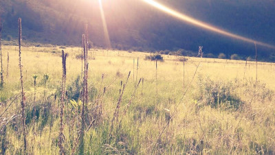
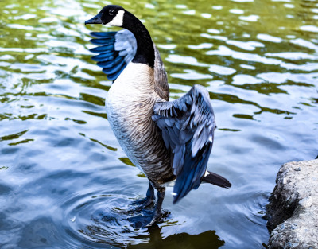
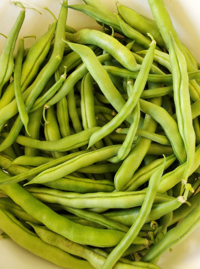
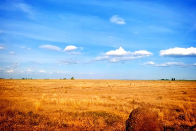

About Yakima:
Yakima and the surrounding valley, is a major export of various produce. Ranging from Walla Walla Sweet Onions, Hops across the Nation, pears, apples, grapes, and the like. During the summer, the fruit and vegetable stands will be bountiful.

Photo Credit to Brooke-lynn Doonan

Photo Credit to Brooke-lynn Doonan

Photo Credit to Brooke-lynn Doonan

Photo Credit to Brooke-lynn Doonan
Here, we will talk about the analytical facts about Yakima Washington.
- The population of Yakima is, 98,000 City of Yakima, (N.A.)
- The year Yakima was incorporated is: 1883 City of Yakima, (N.A.)
- The region of the state where Yakima resides, is on the East Side of Washington State.
- Yakima is an urban city.
- The average income in Yakima for the folks who live there is, 31,039 as of 2022 Data Commons, (N.A.).